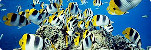
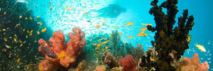

Fishes
Plants
 Keeping aquatic plants in your freshwater aquarium is not that difficult. With a little direction, knowledge, and practice, you will quickly enhance your success rate. There are various aquatic kinds of plants you can choose for your freshwater aquarium.You have a choice of a variety of aquatic plant when setting up your planted tank. There are some plants that float on the aquarium surface, while there are some that stay rooted at the base. Some are utilized for mid-ground and background.
 This is an amazing plant for freshwater aquariums. It can be grown in a wide range of conditions, and is surely a standout among the most well-known and easy-to-maintain freshwater plants.Amazon Swords usually grow very large in the aquarium, so you need to keep this in mind before buying it.These are good for new users because they survive well with only a low level of nutrients and lighting. However, with the inclusion of liquid nutrient supplement and a high level of lighting, the Amazon Sword will start to grow very fast in your freshwater
 Many pet enthusiasts are now keeping fish in their homes using small tanks that can fit in small spaces around the house.To care for the fish and keep it healthy, your responsibilities will include feeding it and cleaning up the mess left behind.Messes might include excess food, algae growth, and dirt or other debris getting into the fish tank.In order to clean and purify the fish tank properly, you will need the best fish tank filter available on the market today.Choosing the right type of fish tank filter can be difficult because there are so many options available.
Many pet enthusiasts are now keeping fish in their homes using small tanks that can fit in small spaces around the house.To care for the fish and keep it healthy, your responsibilities will include feeding it and cleaning up the mess left behind.Messes might include excess food, algae growth, and dirt or other debris getting into the fish tank.In order to clean and purify the fish tank properly, you will need the best fish tank filter available on the market today.Choosing the right type of fish tank filter can be difficult because there are so many options available.